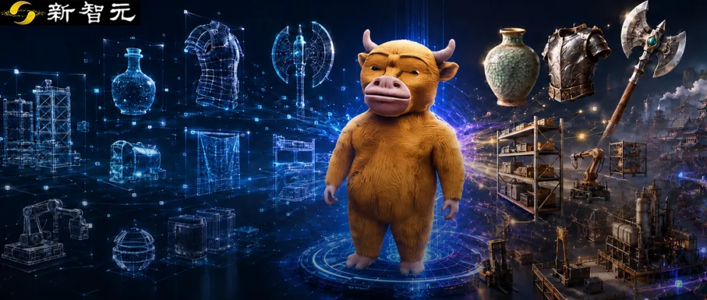

新智元报道
新智元报道

最近，Karpathy在X上甩出了一个实验。
他给Claude Opus 5一段《魔戒》的开头，一百万Token的预算，让它用three.js把故事场景给画出来。
两个小时，5500行代码，一个能走能看的低模山谷就跑在了浏览器里。
所有人都在感叹：AI造世界，原来这么便宜。
但我们想造的世界是这样的吗？
就拿模型生成来说，AI 3D，正卡在一个很尴尬的阶段。网上随手一搜，从一张图片捏出3D模型的Demo已经遍地都是。
但落到生产线，一款小游戏需要成百上千件道具，一座数字工厂可能塞满货架、管线和设备.....
所以真正难的，是批量生成上千、上万个资产的能力。
今天，继Tripo、Meshy之后，AI 3D赛道又多了一个新玩家。
今年4月刚在港交所上市的群核科技，出了一个3D生成模型Lux3D。
传送门：https://lux3d.aholo3d.cn/lux3d/home
上传一张图片，或者输入一句话，Lux3D即可快速生成网格、材质与3D高斯等多种形式的3D资产。
但Lux3D这次带来的，不只是又一个AI 3D生成工具。群核科技还在同步内测世界模型产品，想要生成动态可交互的3D世界……
先来看看Lux3D带来哪些新东西。

过去两年，AI 3D模型进步很快。但也有个尴尬，几何网格越做越像，表面却经常一眼假。
同一种灰色，刷在金属、塑料和陶瓷上，出来的东西完全不同。反光、粗糙度、透明度、折射光泽度，少一层，质感就塌一层。
AI如果只会画轮廓、涂底色，生成出来的东西看着再像，也只是一层塑料壳。
Lux3D，补的正是这一块。
它画完轮廓和底色之后，还会进一步预测金属度、粗糙度、透明度等PBR材质属性，让金属、陶瓷、塑料、石材等表面，拥有更接近真实世界的光照表现。
对于带文字和复杂图案的商品包装，Lux3D也能保留大图案、大色块和Logo。
换一个视角、换一束光，材质依然可以保持相对自然。
比如，一双金属护胫，银灰色的甲片和金色的镶边，光泽完全不一样。甲片是那种被磨过的哑光金属，金边带着抛光的亮，中间皮革扣带又是另一种粗糙的暗。
三种材质挨在一起，各有各的反光、各有各的质感，一眼就分得清谁是金属、谁是皮子。
这就是Lux3D做材质的核心能力：它不是只给模型涂颜色，而是让每种表面都知道自己是什么材料做的。
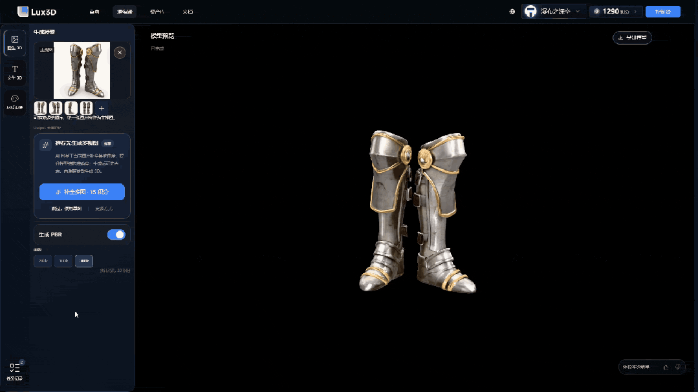
这件青瓷盘更能说明问题。釉面那层半透明的青绿色光泽，透出的冰裂纹路，碗沿处釉层变薄露出一圈土胎。这三样东西叠在一起，才是瓷器之所以是瓷器的原因。
普通AI建模拿一个绿色贴上去就算交差，Lux3D还原的是釉的通透感和开片的肌理，转一圈，光追着釉面跑，裂纹的深浅也跟着变。放到数字文博场景里，这个精度已经足够上展了。
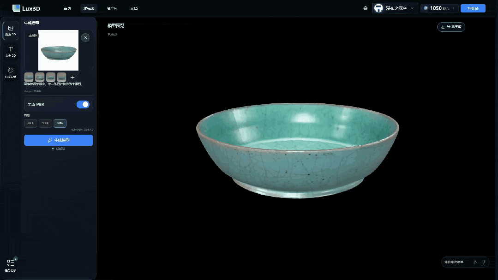
这张用的是极速版的3D高斯模式，偏偏挑了毛绒。这其实是AI 3D出了名的硬骨头。
但你看这匹小马的鬃毛和尾巴，那团棕色的毛茸茸确实有蓬松感，不是糊成一坨的贴图。3D高斯在这里反而占了便宜：它本来就是用大量半透明小椭球堆出来的，表达蓬松、散碎的纤维质感，天然比硬网格顺手。
红色布面和金属小铃铛的反光差异也分得清。
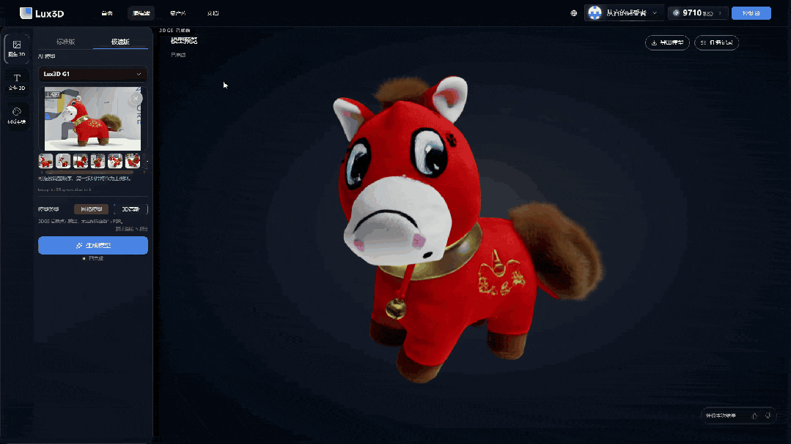
再看这头牛来，全身的毛是顺着肌肉走向长的。鼻子和嘴巴周围切换成了光滑的皮肤质感，跟旁边的绒毛之间有清晰的过渡，不是一刀切的。牛角又是第三种材质，硬的、哑光材质。
一个角色身上同时跑三种完全不同的表面，极速版几十秒出来能做到这个区分度，丢进独立游戏或者动画预演的管线里，已经够用了。
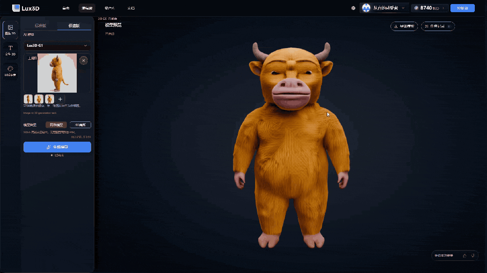
通过Lux3D还可以实现「材质重绘」，比如把杯子彩绘图案，一键迁移到桌子上。
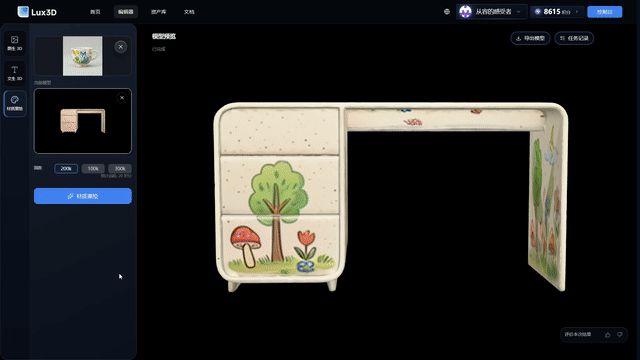
和市面上几个现有模型横向对比，Lux3D在PSNR上排第一，LPIPS排第四，CMMD排第三。
简单说，PSNR看还原得像不像，LPIPS看人眼觉得顺不顺，CMMD看整批材质的气质对不对。
三项各有胜负，综合站进了行业前列。
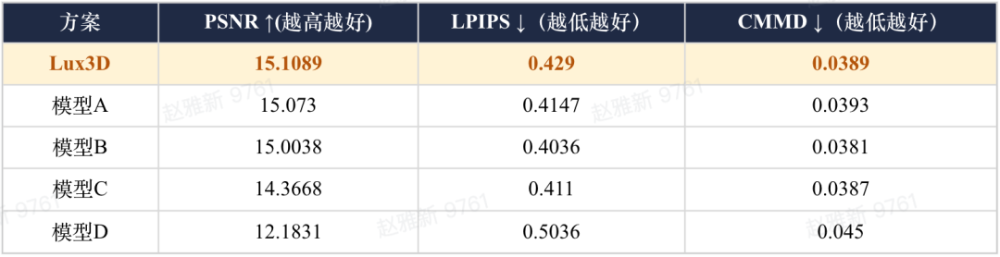
但只把一个模型做得更真，还解决不了3D生产最贵的问题：量。
想把3D资产真正铺开，光靠一条技术路线还不够。
目前，市面上多数3D生成模型，往往在押注单一路线。
Lux3D这次没有做这道「单选题」。
除了传统的Mesh网格与PBR材质，它还把「3D高斯」引入了同一套生成架构。
传统Mesh用顶点和面搭出物体表面。「3D高斯」则换了一种办法：
用大量带有位置、大小、方向、颜色和透明度的三维斑点，把一个物体「拼」出来。
这条路线最大的优势，就两个字：省、快。
它能用很低的计算成本，撑起质量不错的辐射场表达。生成快，渲染也快，尤其适合快速预览和大规模铺场景。
所以，Lux3D做了一个极速版。
最快20秒，一个3D模型就能生成出来。
当3D资产被压到这个速度，过去铺不开的量，一下子有了想象空间。
游戏中常见的「宝箱」，先让Lux3D补充其他三个视图，再生成3D资产，短短几十秒即可完成。
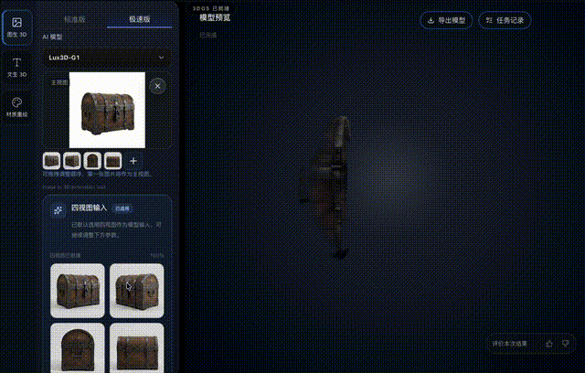
一张图，几十秒钟，够用的3D模型就出来了。
这种游戏里常见的战斧，也是秒出。金属、宝石、木头的质感都还原的极好。
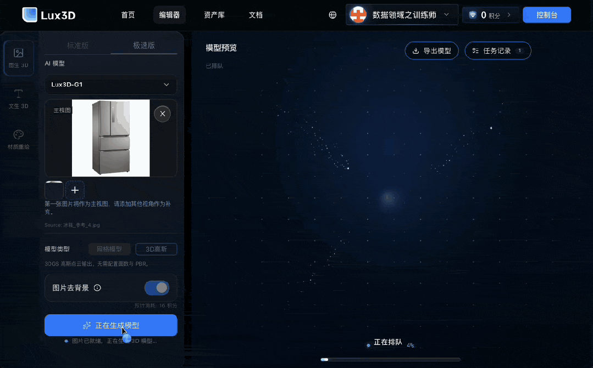
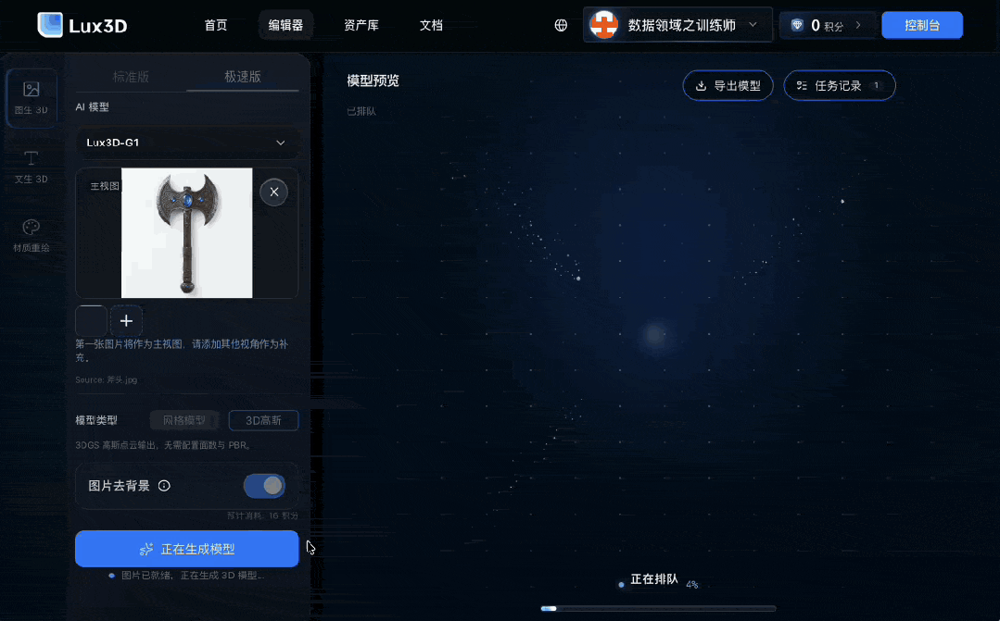
还有，未来的工业孪生里海量资产的生产方式，也会变化。
搭一座数字工厂，核心设备还能用CAD图纸或者扫描重建。真正磨人的，往往是散落在场景里的大量环境资产。
货架、托盘、管线、控制柜、安全围栏……
单个看起来不起眼，凑在一起却可能有成百上千件。现实中的产线调整一次，数字空间也要跟着改一次。
这类资产大多不需要电影级精度。
几何结构合理、材质能够辨识，就足以支撑场景搭建、布局验证和仿真训练。少数关键设备，再交给标准版或专业工具精修。
还有一个现实的问题：批量生成，账算下来贵不贵？
现在不少AI 3D工具生成一个模型不贵，但要生成一百个、一千个，成本能不能也一起降下来。
这也是Lux3D的另一个优势，生成一个模型成本最低是1个积分，折合之后大约0.07元。
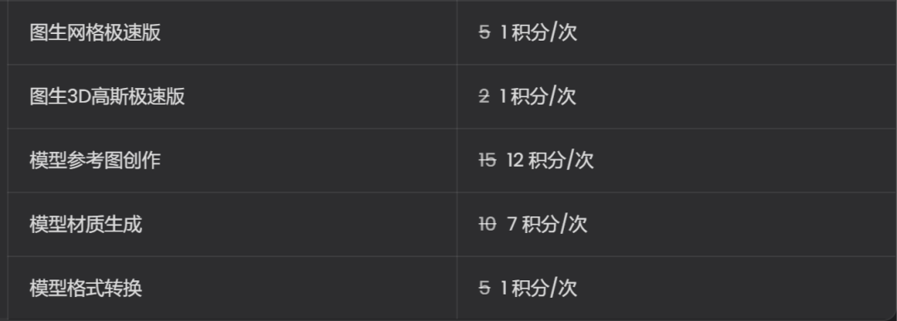
另外，群核还把自研渲染引擎API开放了。
Lux3D生成的资产，可以直接接进同一套渲染生态。第三方工具生成的3D资产，也能调用这套能力完成渲染。
说白了，就是：
Codex当包工头，Lux3D出砖，Blender砌墙。
开发者只要提出一个目标，比如「搭建一座智能仓库」，Codex就会拆解任务，调用Lux3D批量生成货架、托盘、控制柜等资产，再交给Blender自动完成导入、摆放、缩放和材质处理。
场景搭好之后，Agent还能继续检查效果。哪里缺了、哪里摆错了，再调用工具修改。
人只需要说清楚自己想要什么，后面的建模、导入和搭建，由整条工具链自己往下跑。
这就是3D模型生成的「Harness时刻」！
Harness本来是给AI套上缰绳和工具，让它真的去干活。以前这个词在代码圈火，现在3D圈也有了自己的版本——
开发者在对话框里说「把这块空地改成公园」，agent接到指令，自己调Lux3D生成树木、长椅、步道，自己往场景里摆，位置、比例、朝向全不用人管。想再改方案，一句话的事。
没有人打开建模软件，没有人手动拖拽任何一个模型。人只下命令，AI拆任务、造资产、搭场景、检查效果，一条链跑完。3D内容生产从「手搓」进入了「指挥」的阶段。
小游戏需要成百上千个道具，单件无需电影级精度，关键是交得快；具身智能训练需要海量物体，核心诉求是几何合理、材质可辨识；电商面对数以万计的SKU，也可以先用极速版完成批量3D化，再把重点商品交给标准版精修。
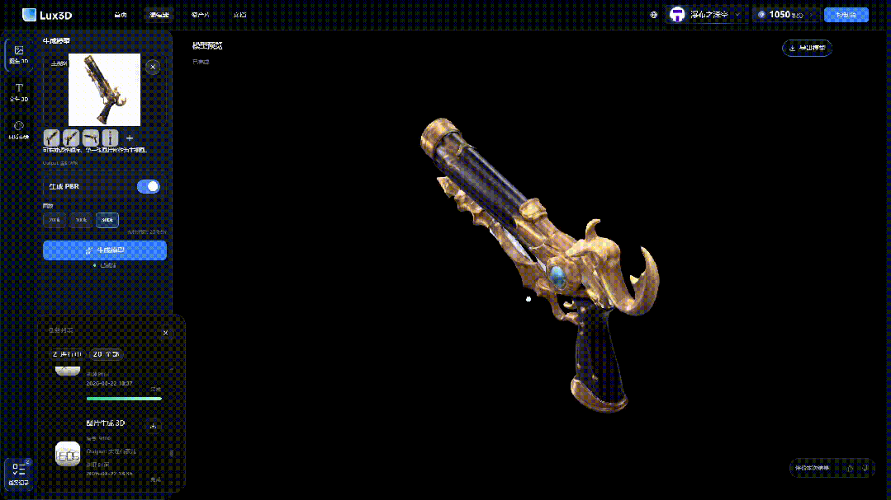
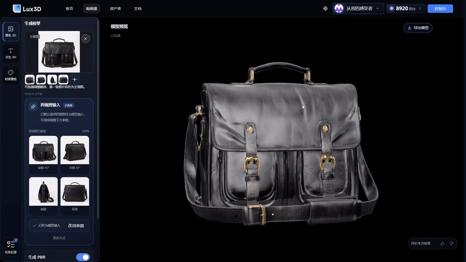
先铺量，再精选。
当模型生成从逐件制作变成批量调用，AI 3D才真正开始进入生产力阶段。

不过物体生成只是世界模型的一个模块。
把Lux3D单独拎出来看，它是一个不错的3D生成工具。放进群核的整张路线图里，它负责的是「物体」这一层。群核真正想造的，是造一个无限贴近物理真实的数字世界。
但要造出这样一个世界，行业现在有两种完全不同的答案。
「像素派」沿着Sora、Genie那条线走，生成的是一帧帧画面。
看着很真，但画面里的桌子通常没有明确可读取的坐标，也没有完整的几何结构。你可以看见它，却不一定能单独选中、拆开或者推走。
它更像一段可以观看和探索的视频。
「空间派」以李飞飞的World Labs为代表，直接生成带几何、坐标和语义信息的三维空间。
桌子有位置、有形状、有身份，可以被拆分、替换，再进一步加入重力、碰撞和运动规则。
它更像一个真正能够运行的房间。
李飞飞今年的动作，已经把路线图摊在了桌上。
World Labs的Marble已经做成商用产品，7月21日又收购了机器人仿真公司SceniX，明确把世界模型的下一站押在了机器人身上。
她在X上直接写道：世界不只是由文字组成的，空间智能也从来不只是感知和生成世界，它关乎与世界的互动。
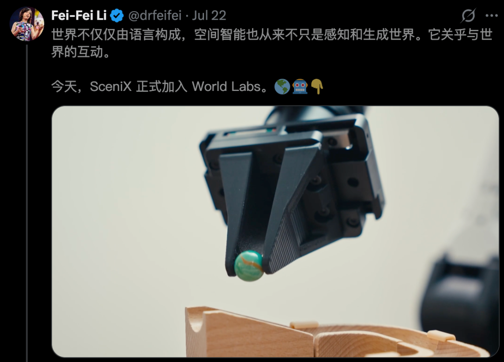
群核也站在空间派这一边，同样走的是显式3D路线。
但对群核来说，生成一座静态3D场景，只是起点。去年，群核就发布了空间生成模型SpatialGen，解决「空间从哪里来」。
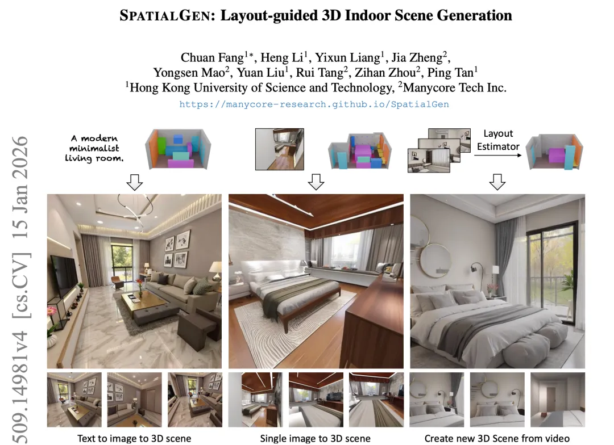
论文地址：https://arxiv.org/pdf/2509.14981
沿着这条路线，它正在内测的新一代世界模型，要在这张3D底图上继续往前走：场景可以持续编辑，里面的物体能够运动、碰撞和发生交互。
这要求模型生成的不只是外观。每个物体都得拥有明确的位置、几何结构和语义信息，能够被识别、拆分、替换，再进一步加入物理属性和交互关系。
像素，只是最后渲染出来的结果。
真正被生成出来的，是背后那个可以编辑、交互和推演的三维空间。
但这条路线要跑通，还需要足够多真正理解物理世界的数据。
训练数据上，群核走了两条路。
一路是AI生成数据，另一路是大量从物理世界重建回来的真实数据。先把真实数据注入模型，再生成；生成完成后，再拿真实数据回验、修正。
一圈一圈跑下去，生成内容受到的物理约束越来越强，幻觉也会跟着降低。
这套「注入→生成→回验→修正」的闭环，最终要解决的，是数字世界与物理世界之间的落差。
群核首席科学家周子寒说得很直接：
做世界模型，图的不是一个好看的渲染画面，而是让数字世界和物理世界在更多维度上对齐，让数字世界吸收更多物理世界的信号，最终让在数字世界训练的AI，也能更好地在物理世界行动。
把群核的逻辑往上再推一层，你会看到一个更大的判断。
语言是世界的压缩与投影，空间才是世界本身。空间智能，是AGI的另一半。
大模型把文字玩出了花，但文字终究只是对物理世界的符号化压缩。
一把椅子，你可以用一百个词描述它，但那一百个词加起来，也不如把它放进一个有重力、有光照、有碰撞的三维空间里，让智能体自己去坐、去推、去摔一跤来得直接。
带有物理属性、能够动态交互的世界，才更接近智能体反复试错所需要的数字训练场。
但机器人训练，只是空间智能的一个落点。
放进空间设计，它能让方案生成、修改和验证在同一个3D世界里完成；放进影视创作，它能搭出可控、可复用的数字影棚；再往游戏、工业孪生和机器人训练里走，背后需要的其实是同一套空间底座。
李飞飞把其中一条路押在了机器人身上。7月收购SceniX之后，World Labs的路线图已经明确：从生成3D世界，到在3D世界里训练机器人，再让机器人走进真实世界。
相比之下，群核把自己放在了更靠上游的位置。
从2011年创立至今，它从酷家乐起步，积累起超过4.8亿个3D模型及空间设计元素，以及渲染、重建和结构化空间数据能力。
如今，这些能力正被重新组装成世界模型的底座，让数字世界不断吸收物理世界的信号，再通过生成、回验和修正，一次次向真实世界靠拢。
空间设计、影视创作、游戏开发、工业孪生、具身智能，都可以从这套底座上长出来。
群核想做的，是空间智能时代的「卖水人」。
Lux3D今天正式上线：
国内：https://lux3d.aholo3d.cn/；
国际：https://lux3d.aholo3d.com/
编辑：所罗门 桃子